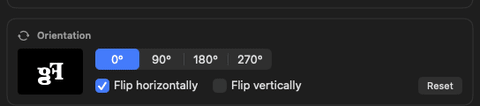

How it works
A mirror-glass rig needs one thing: whatever is on the presenter-view window, mirrored and correctly oriented, full-screen on a second physical display. OpenPromptr captures a source with ScreenCaptureKit, applies rotation and mirroring, and shows the result on the target — nothing else runs, and unused screen area stays black.
Source
A single window — simplest, everything else stays usable.
A visible physical display.
A private virtual display, for when the presenter view shouldn't appear anywhere else.
Rotate & mirror

Target display
Full-screen output, always on a display separate from the source — so it never covers the thing being captured.
Optional automatic retry after a capture failure, and automatic resume when a disconnected display reappears.
Get it
Notarized, signed builds are on the releases page. The app checks for updates itself once installed.
-
Download and open the disk image.
OpenPromptr-v1.2.0-macOS-arm64.dmg — verify against its published checksum if you'd like — then drag OpenPromptr into Applications.
-
Grant Screen Recording permission.
System Settings → Privacy & Security → Screen Recording, for OpenPromptr.
-
Choose a source and a target display, then start output.
See Operation in the README for the full walkthrough.
Prefer to build it yourself? It's a small SwiftPM project — see building and testing. Release history is in the changelog.
Privacy
Captured images are processed locally and shown on a display only — no telemetry, no storage of image content on disk. The only outbound network access is a daily check against this repository's GitHub Releases (can be turned off), used solely to offer app updates. An optional, off-by-default local API (127.0.0.1 only, token-authenticated) lets a script or a Stream Deck control output from outside the app — never reachable from the network. Full detail is in the security policy.
This page behaves the same way: every stylesheet, font, and image is served from this repository, so nothing here loads from a third party, sets a cookie, or records your visit.
Accessibility
Every control is a standard SwiftUI button, toggle, or picker, with standard keyboard focus and an accessibility label. This has not been tested end-to-end with VoiceOver. Full detail is in the README's accessibility note.